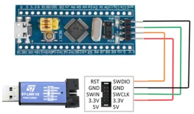

Bluepill
Description
This implementation provides the hardware abstraction for Doggie and evilDoggie to run in the STM32F103C8 microcontroller (commonly known as Bluepill).
Supported Configurations
Doggie
The Doggie Bluepill implementation supports three configurations for interacting with a CAN Bus network, enabling communication via USB or UART, while leveraging different CAN transceiver options.
- USB and MCP2515 (SPI to CAN)
- UART and MCP2515 (SPI to CAN)
- UART and Internal CAN Controller
For a detailed documentation refer to the Doggie on Bluepill documentation
EvilDoggie
The code for the evilDoggie implementation is written but it is not yet supported as the memory requirements are not met.
How to flash a release using St-Link v2
Prerequisites
Installing stlink tools
sudo apt update
sudo apt install stlink-tools
Alternatively, build the tools from source (if you need the latest version):
git clone https://github.com/stlink-org/stlink.git
cd stlink
make release
sudo make install
Preparing the Firmware
Ensure your firmware binary is compiled and ready to flash. You could download the release file doggie_bluepill_{serial}_{can} with the desired configuration from the Release page.
Flashing the Firmware
-
Connect the ST-LINK programmer to your computer via USB.
ST-LINK SWDIO→Bluepill SWDIOST-LINK SWCLK→Bluepill SWCLKST-LINK GND→Bluepill GNDST-LINK 3.3V→Bluepill 3.3V(if not powered externally)

-
Power the Bluepill (either through the ST-LINK or an external power source).
- Open a terminal and navigate to the folder containing your downloaded firmware binary.
- Flash the firmware using
st-flash:
st-flash write doggie_bluepill_usb_mcp 0x8000000
Explanation:
write: Command to write the firmware.doggie_bluepill_usb_mcp: The binary firmware file to be flashed.0x8000000: Starting address of the STM32F103C8 flash memory.
How to Compile and Flash
Prerequisites
-
Install Rust and cargo with support for ARM architecture.
Follow the installation instructions from the official Rust website. -
Add the target architecture:
rustup target add thumbv7m-none-eabi
- Install
probe-rs
curl --proto '=https' --tlsv1.2 -LsSf https://github.com/probe-rs/probe-rs/releases/latest/download/probe-rs-tools-installer.sh | sh
Compile and Flash the Firmware Using ST-Link V2:
In order to compile for the bluepill, first we need to select the desired project with the --bin flag (doggie or evil_doggie) and the desired features.
cargo run --bin {PROJECT} --release --no-default-features --features {FEATURES}